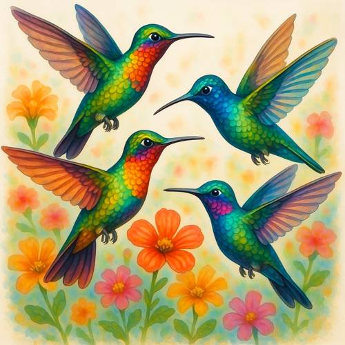
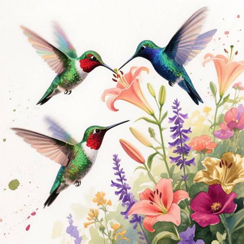
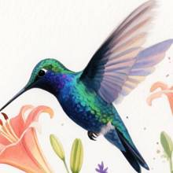
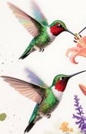

Attribute — A beautiful watercolor painting depicts three colorful hummingbirds ho
A beautiful watercolor painting depicts three colorful hummingbirds hovering among the flowers, their wings vibrating at high speed, and the picture is full of movement.

Direct — one call, no iteration

Continuum — Qwen3.8-27B + Qwen-Image
Judge — Direct
FAILAttribute - Quantity — The image contains four colorful hummingbirds, not three as requested by the prompt. Two of the hummingbirds have plumage with a gradient of red, orange, and yellow on their chests, while the other two have plumage that is primarily blue and green.
PASSStyle — The image is rendered in a style that emulates a watercolor painting, characterized by soft edges, blended colors, and a background with a washed-out appearance, suggesting the use of water-based pigments on paper.
Judge — Continuum
PASSAttribute - Quantity — The image displays exactly three hummingbirds. Two of the birds have green bodies and red throats, while the third bird is primarily shades of blue and green. All three are colorful.
PASSStyle — The image is created in a watercolor painting style. This is evident through the soft blending of colors, the translucent quality of the paint, especially on the flowers and wings, visible paint splatters, and the textured, light-colored background resembling watercolor paper.
What the agent did
Thinking
The user wants a beautiful watercolor painting of three colorful hummingbirds hovering among the flowers. Their wings are beating at high speed, and the picture is full of motion. Let me generate this image using the qwen-image model as instructed.
Step 1 — `generate_image`
{
"model": "qwen-image",
"prompt": "A beautiful watercolor painting of three colorful hummingbirds hovering among lush blooming flowers. The hummingbirds have iridescent emerald green, ruby red, and deep blue plumage, each captured mid-hover with long slender beaks reaching toward flower nectar. Their wings are rendered as high-speed motion blur \u2014 soft translucent fan-shaped streaks of color radiating from their bodies, conveying the rapid vibration of hummingbird wings. Loose expressive watercolor washes, visible brush strokes, soft pigment bleeds and granulation, white of the paper showing through, delicate splatters and drips. Wildflowers: trumpet lilies, salvia spikes, and blossoms in coral, magenta, gold and violet. Full of movement and life, dynamic diagonal composition, sunlit garden atmosphere, gallery-quality fine art watercolor on textured cold-press paper.",
"width": 1024,
"height": 1024
}
Result img_0
Thinking
The image looks great. Three colorful hummingbirds hovering among flowers, with their wings rendered as motion blur (wings shown as soft fan-shaped streaks). The watercolor style is lovely too, with splatters, washes, and textured paper. Let me inspect the details — I'll zoom in on the birds to check the quality of the wings and beaks. Actually, the image already looks good. Let me do a quick inspection of the wings to confirm the motion blur is convincing and the birds look correct. Looking at the full image: three hummingbirds, two with red throats (ruby), one with a blue/purple throat. The wings show nice motion-blurred fans. Flowers: peach-colored lilies, purple salvia, pink and magenta flowers, gold blooms. Watercolor splatters in the background. This matches the prompt very well. To confirm there are no artifacts, I'll zoom in and inspect the hummingbirds' heads/wings, then mark it as the best.
Step 2 — `inspect_region`
{
"image": "img_0",
"roi": "the blue-throated hummingbird at top right"
}
Result img_1

Step 3 — `inspect_region`
{
"image": "img_0",
"roi": "the hummingbird at bottom left"
}
Result img_2

Thinking
The zoomed-in crop looks good. The hummingbirds are well-drawn: - Blue/green bird in the upper right: beautiful iridescent plumage, blurred wings expressing high-speed motion, delicate beak reaching toward the flower. There's a slightly strange small black marking (legs/claws) visible on the belly, but this is a normal thing for a hummingbird in flight — the feet are visible. No problem. - The two ruby-throated birds: green bodies, red throats, blurred wing fans, hovering poses. All three birds display motion-blurred wings, and the overall image is a lovely watercolor featuring splatters, washes, and flowers. The prompt requirements are all satisfied: ✓ Watercolor painting ✓ Three colorful hummingbirds ✓ Hovering among flowers ✓ High-speed beating wings (motion blur) ✓ Full of dynamism The image is of good quality. I'll mark it as the best and stop. There's no text that needs to be verified. It's good enough — it's a solid result.
Model
The close-up crops confirmed that everything rendered correctly: all three hummingbirds have distinct iridescent plumage (ruby-throated green, plus a blue-green one with a violet throat), their long beaks are hovering toward the nectar of the flowers, and the wings are rendered as translucent, motion-blurred fans that convincingly capture the high-speed fluttering. The watercolor medium also reads well — loose washes, pigment splatters, and granulation on the textured paper, plus a vibrant bouquet of lilies, salvia, and poppies, giving the whole thing a sense of dynamism.
Step 4 — `mark_best`
{
"image": "img_0",
"reason": "Meets all prompt elements: watercolor style, three colorful hummingbirds hovering among flowers, wings shown as high-speed motion blur, dynamic composition with splashes of color and splatter. Verified via crops that bird anatomy and wing blur render cleanly."
}
Thinking
Marking complete. The image is finished and has been marked as the best. I'll provide the final summary.
Model
The painting is complete and marked as the best result. **Summary of what the final image delivers:** - **Medium:** Genuine watercolor look — soft washes, visible pigment granulation, drips and splatter flecks, and the white of the cold-press paper showing through. - **Subject:** Three distinct hummingbirds — two with emerald bodies and flashing ruby-red throats, one with a deep blue-green body and violet throat — each hovering mid-air with a long beak aimed at a flower. - **Movement:** Wings rendered as translucent, multi-colored fan streaks (motion blur), plus a dynamic diagonal composition of birds, lilies, salvia, and poppies that carries the eye across the page. The result matches the prompt on every element, so no further edits were needed.